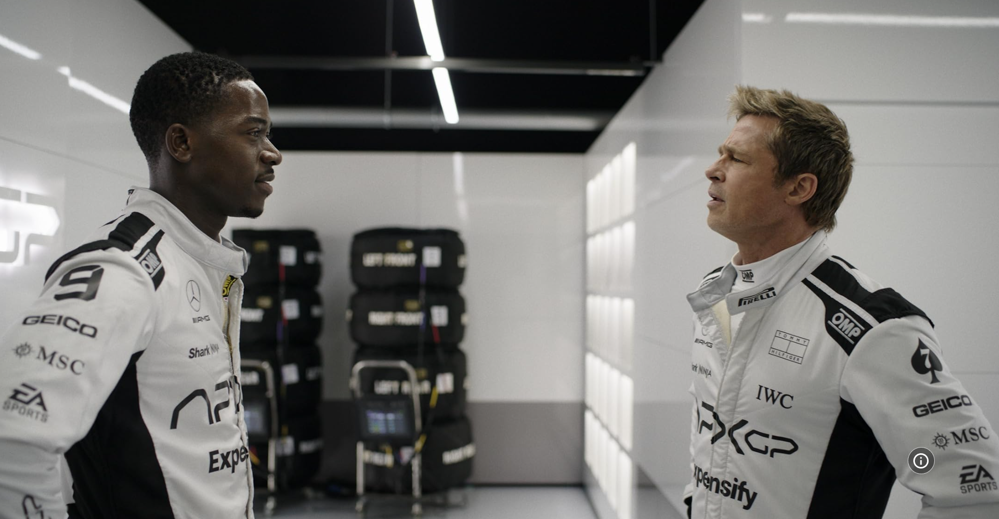

- "Hope is not a strategy. Create your own breaks."
-
Sonny Hayes reminds Joshua Pearce that one must create oportunities
rather than wait for luck.
- "What do you care what they say? It's just noise."
-
Sonny is pretty much telling Sonny that he needs to stop focusing on
what other people think and say about him.

Image source:
F1: The Movie image on IMDb